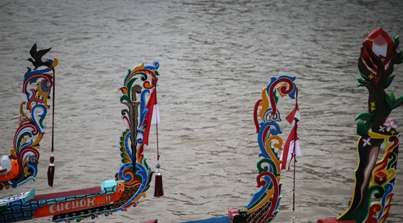
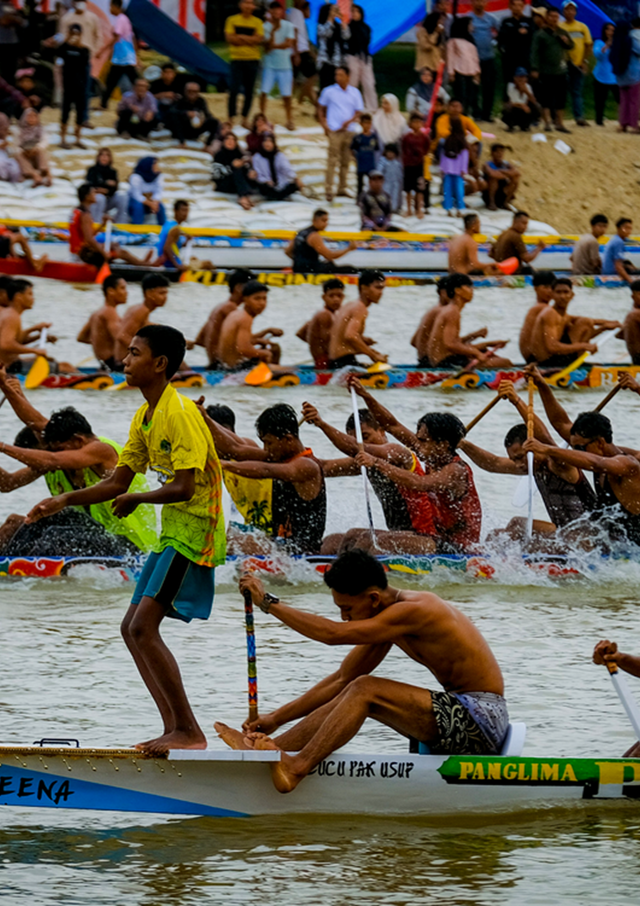

Warisan Di Atas Sungai
Tradisi yang Menyatukan, Kecepatan yang Penuh Makna.
Pacu jalur adalah perlombaan perahu tradisional dari Kabupaten Kuantan Singingi, Riau, yang telah berlangsung sejak ratusan tahun lalu. Tradisi ini awalnya dilakukan sebagai bentuk rasa syukur atas hasil panen dan keselamatan masyarakat.
Setiap jalur (perahu) dibuat dari satu batang kayu utuh, bisa mencapai panjang 25-40 meter, dan didayung oleh puluhan awak. Dengan irama dayung yang kompak, Pacu Jalur bukan hanya ajang kecepatan, tetapi juga simbol kebersamaan, ketangguhan, dan identitas budaya masyarakat Riau
